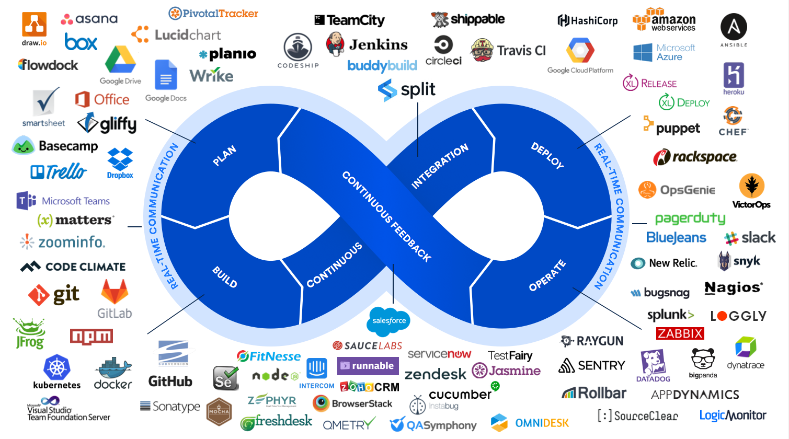
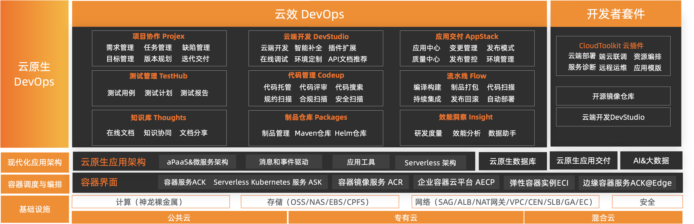
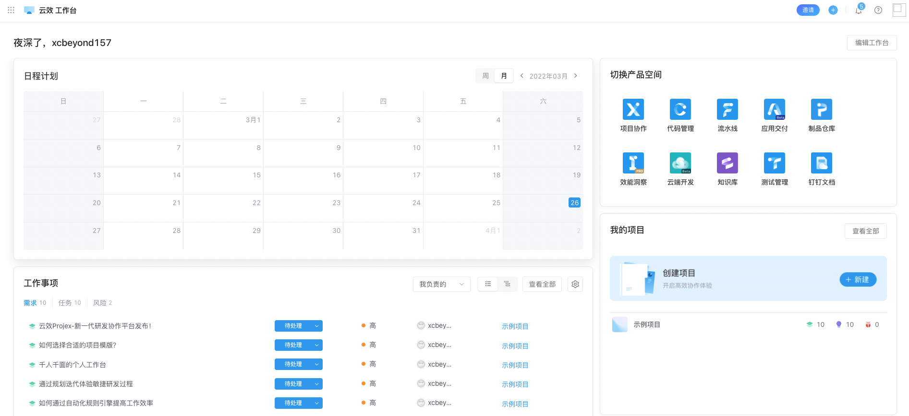

提及 DevOps 这个词，大家都一定不会陌生。近些年一直被大家所追捧、讨论，频频出现在各大技术社区、产品实践之中，可谓备受瞩目。
那么，DevOps 是什么呢？

有人说它是 Jenkins 的最佳实践，是一种工具，也有人说它是一种思想，更有人说它是一种方法论。
今天，我们不具体谈论 DevOps 是什么？能干啥？相信大家对它都是有着自己的认知、理解，以及在各自领域中的最佳实践。今天，我们结合阿里云云效，站在云原生时代，一起解读不一样、一站式的 DevOps 平台，让我们彻底认清 DevOps 覆盖的范畴，如何高效打造全新的研发新模式，助力企业加速。

1、云效
云效，全称为“云效平台”，起于 2012 年，是阿里巴巴旗下一站式研发提效产品。通过项目流程管理和专项提效自动化工具，真正实现 24 小时持续集成持续交付。
云效，云原生时代一站式 DevOps 平台，数十万企业都在用。支持公共云、专有云和混合云多种部署形态，通过云原生新技术和研发新模式，助力创新创业和数字化转型企业快速实现研发敏捷和组织敏捷，打造“双敏”组织，实现多倍效能提升。
1.1 产品优势
相比开源自建，云效 DevOps 具备如下优势：

1.2 绝不是 Jenkins、CI/CD这么单纯
看到 DevOps，最初的想法大都是停留在 Jenkins、CI/CD 这些层面，自己搭建，何必大动周折呢？ 我们都是这样搭建、使用，效果杠杠的。
通过今天对云效学习，彻底打翻了我的认知，让我对此刮目相看，DevOps 绝不是 Jenkins、CI/CD这么单纯。云效为我们提供了一站式的解决方案，众多产品全覆盖了整个软件生命周期。
云效产品矩阵如下：

1.3 应用场景
一站式DevOps方案：
云效提供了一站式 DevOps 方案，从“需求->开发->测试->发布->运维”端到端的协同服务和研发工具，支持多种部署形态。

-
精益敏捷研发
以需求为价值单元，拉通端到端的交付过程，以流动效率为核心，组织跨职能协同。
-
自动化CI/CD流水线
以代码变更为流动单元，基于发布流水线，拉通开发、测试、运维所有职能，持续、快速、高可靠地发布软件。
持续交付解决方案：
结合代码管理平台和持续交付流水线，为小微企业实现随时集成，每日交付提供了很好的基础保障，真正实现持续快速交付有效价值。

-
统一研发流程
统一的代码托管和评审、一致的构建和运行环境、规范的自动化发布流程。
-
每日交付
开发随时可以集成、每日可以发布。
2、云效初体验
为了更好的体验、真正了解云效，只有真枪实弹上手实操一番，才能谈得上“了解”、“知道”。阿里云云效，非常贴心，为我们免费提供使用、体验（免费使用入口），这一点非常的人性，好的产品要想被人熟知，免费体验环节比不可少。
接下来，我将以初次使用者的视角来逐步探寻云效的世界。
2.1 工作台
工作台，作为一个复杂系统的个人首页，云效给人呈现出了日程计划、产品条目、工作事项、我的项目等板块：

一目了然，不拖泥带水。无论你是该平台老手，还是初次使用者，绝对简单、容易上手，无需任何操作文档指引（虽然，云效也提供了完善的用户手册）。
总共拥有如下板块：
-
日程计划
以熟知的日历方式呈现在工作台的首要位置，可快速获取工作日程，方便提前安排工作，处理风险。
-
切换产品空间
考虑到云效平台提供的是 DevOps 一站式解决方案，众多产品选择、切换必定是进入系统的首要任务，各产品的快速入口必不可少。
-
工作事项
为提升工作效率，获取自己负责的工作项进度并且快速开展工作，可根据场景定制列表。
-
我的项目
个人项目快速访问入口，可通过收藏定制排期。
-
项目进度
查看重点项目进度，支持迭代及里程碑两种数据透出，可根据项目管理模式定制。
-
代码库
快速前往最近访问的代码仓库。
-
合并请求
极速查看待我评审与我创建的合并请求，及时跟进评审进度。
此外，我无意间发现了非常人性化，或者说是独特的操作体验：在【编辑工作台】卡片时，可根据用户角色来切换角色工作台，目前包括：通用工作台、研发工作台、PM工作台三种。（之所以说是独特，主要体现在灵活、便捷、人性化等方面，想用户所想。）

2.2 项目协作
项目协作，是将项目管理纳入了云效的统一管理，比如：需求、任务、缺陷、里程碑等的管理，进行了统一化，提供了各种看板，能够清晰的呈现给项目管理者、开发者、测试者等不同的角色。

可视化的项目进展和协作：
简洁优雅的「看板」呈现着项目的各个关键阶段，随时看见「谁」，在「何时」，要完成「什么」，团队成员不必再在协同工作进展上耗费时间。更棒的是，你可以打破部门边界，基于项目组合成员，跨部门协同也不再是难题。
井然有序的任务管理：
如何让团队配合更默契？答案是：更明确的分工。将项目拆分为具体的可执行的任务，分工明确，井然有序。云效项目协作的「任务详情页」好像是一个容器，任务的执行过程和结果，都结构化地沉淀在这个容器里，帮助每个人准确掌握自己在任务中的职责，更好的做任务管理和展现，高效驱动每一项任务得到落实。
多云视角团队协作更佳：
云效项目协作是连接团队的桥梁。打破部门边界，市场运营、产品经理和工程师可以共享同一个工作台。以「协作」的方式，多样化的工具整合，展现更紧密的跨部门协作，创造更多业务增长。多元视角赋能每一位成员，让企业、团队和个人以更高效的协作方式围绕目标 创造成果。
实践敏捷研发全流程：
每一个市场都在赛跑， 使用云效项目协作打造一体化研发协作流程，借助专业工具，让团队表现更优异，产品更快响应需求变化。
全面支持「看板」和「Scrum」敏捷方法，你可以围绕产品目标灵活规划每个迭代冲刺。实时数据反馈，让计划调整更及时，团队成员积极应对变化，持续交付价值。
前台业务部门和后台研发团队不应该是割裂的，云效项目协作正是连接前后台的桥梁。打破部门边界，市场运营、产品经理和工程师可以共享同一个工作台。更紧密的跨部门协作，能够创造更多业务增长。
2.3 代码管理
代码管理，就是整合的一个代码仓库，将各类代码仓库进行了统一入口化管理，避免代码管理时，跳转到其他平台。

此外，提供代码托管、代码评审、代码扫描、质量检测等功能，全方位保护企业代码资产，帮助企业实现安全、稳定、高效的研发管理。
整体功能如下：
-
基础代码托管：提供企业级代码托管服务，支持企业内部公开（企业内成员可访问）、私有代码库类型；
-
权限管理：数据企业间完全隔离，提供企业、代码组、代码库多级精细化权限管控；
-
代码评审：灵活可配置的代码评审场景支持与合并请求卡点设置；
-
代码检测：开箱即用的代码规范、安全自动化检测；
-
持续集成：无缝连接持续集成流水线，拓展代码检测、构建、部署场景；
-
研发流程：结合需求、测试、构建、部署等产品模块，支持一站式研发流程管控；
-
通知集成：支持通过钉钉、站内信、邮件等方式，通知告警及时触达；
-
…
2.4 流水线
流水线，又名 Flow，是一款企业级、自动化的研发交付流水线， 提供灵活易用的持续集成、持续验证、 持续发布功能，帮助企业高质量、高效率的交付业务。
流水线是持续交付的载体，通过构建自动化、集成自动化、验证自动化、部署自动化，完成从开发到上线过程的持续交付。通过持续向团队提供及时反馈，让交付过程高效顺畅。
看似是一套 Jenkins 的整合工具，但这远远不止这些。

覆盖各种工具和技术栈：
作为一款企业级的自动化交付流水线，全面覆盖研发场景中涉及的技术栈和工具链。

支持流水线源、构建工具、自动化测试、部署等各种能力。
强大的研发分支管理能力：
阿里巴巴在 DevOps 的最佳实践也体现在分支管理能力上，Flow 支持将常用的研发模式融入流水线，将企业 DevOps 的整个体系流程化。
丰富而灵活的模版：
提供了数十种通用的流水线模版帮助你快速创建流水线，与此同时，支持企业定制自有模版来管理企业持续集成和持续交付流程。
2.5 应用交付
应用交付，是一款开发者友好的、以应用为核心的云原生应用交付平台，提供应用编排、环境管理、部署运维、资源管理、应用发布等一站式能力，帮助企业建立应用持续交付整体解决方案，加速企业云原生与 DevOps 转型，提升团队研发效能。

主要功能：
-
应用管理
-
应用编排
-
环境管理
-
部署运维
-
变量管理
-
发布流水线
-
资源管理
2.6 制品仓库
制品仓库，实际上是软件包管理仓库，此外还包括软件包的构建、测试、部署等。

制品库在开发阶段为使用各种开发语言的微服务开发者提供依赖解析的唯一入口。在构建阶段为各种语言的构建工具提供唯一的依赖解析源和统一的各种语言制品管理库。进入测试阶段后，所有测试环境部署工具从制品库拉取满足测试条件的制品进行部署，测试结束后将测试结果数据反馈到制品库，并且与制品进行关联。部署阶段依据质量关卡检查制品是否满足部署条件，满足则由部署工具从制品库拉取制品(也可能是环境中的客户端拉取，如Docker)，对接环境进行部署。

致力于帮助开发者统一管理各种开发语言在开发、构建过程中的依赖，构建成果（二进制制品）以及交付过程关键信息的重要组件。制品库衔接持续集成和持续部署，是持续集成的成果管理仓库，也是持续部署的物料来源，同时也为研发的静态安全提供保障。
2.7 效能洞察
效能洞察，是一个专业的交付过程观测和研发效能度量、分析平台。
从计划、执行、风险等 6 个方面度量交付过程、及时暴露风险，保障交付效率和质量。通过流动效率、资源效率、质量保障 3 个维度可视化团队效能状态，深入分析问题，精准指导效能改进。
其数据来自开发者在项目协作、代码管理等云效的其他应用中的日常协作、研发行为，能够直观地反映企业的整体研发进展情况，最大化发挥团队作战优势。

2.8 云端开发
云端开发，是一款云效推出的面向云原生的 WebIDE 产品，实际上是基于 Web 版本 VSCode 而来的开发 IDE。只需一个浏览器即可获得与本地 IDE 一致的开发体验。通过预置开发环境，使用智能编码能力，即可快速地编辑、调试、运行、部署云端代码。

2.9 ……
还有更多模块，值得大家继续探索。
3、云效总结
终于把云效相关模块全部了解了一番，总体感觉是 “全”，它包含从软件开发的整个全生命周期，提供了全方位的解决方案或者工具集，让企业可以完全基于云上开发、协作、管理以及交付等，颠覆了我对 DevOps 的认知：DevOps 不再只是 Jenkins。
作为一家企业，可能大家都已经拥有了云效中部分功能，甚至全部功能，但在统一管理、使用上，可能还会存在各种问题，或者说是不够丝滑，至少在平台搭建时往往是费时费力。云效的出现，恰恰解决了这些问题，不愧是一站式的 DevOps 平台、DevOps 全家桶。
从产品设计角度来看，它为用户所想，提供了全方位的功能。但在用户整体体验上，由于众多产品的原因，却不得不在不同产品间来回切换，这一点还希望云效平台，或者阿里云的其他产品能够在这一方面有更好的解决方法。
最后，一起期待云效平台的更加完善，为用户提供更加全方位的云效体验。
参考资料：